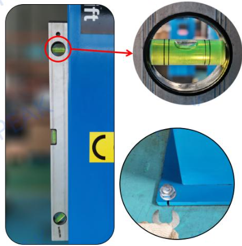

Елементи щоденної перевірки:
1. Візуальна перевірка еластичних шпильок на ослаблення або випадання.
2. Візуальна перевірка гумових накладок на знос, при необхідності заміна.
3. Перевірте роботу запобіжного пристрою, переконавшись, що він блокується та розблоковується належним чином. За потребою відрегулюйте кабель запобіжного пристрою.
4. Перевірте робочий стан замка рукоятки та місячної шестерні, переконавшись, що вони належним чином з'єднані.
5. Утримуйте поверхню підйомника та оточення в чистоті під час щоденного використання.
6. Забезпечте, щоб підйомник виконував повний хід підйому та опускання принаймні один раз на день для продовження терміну служби гідравлічного циліндра.
Елементи щомісячної перевірки:
1. Перевірте всі гвинти на предмет ослаблення та затягніть їх, якщо потрібно.
2. Перевірте масляний шланг на наявність поломок, ослабленості або витоку масла в місцях з'єднання та замініть або затягніть його, якщо потрібно.
3. Перевірте наявність витоку масла в кожному положенні клапана блоку живлення та замініть або затягніть, якщо потрібно.
4. Перевірте, чи є витік масла в кожному положенні клапана блоку живлення, якщо так, замініть або затягніть.
{kind=link}
5. Перевірте, чи кабель синхронізований. Відрегулюйте, якщо підйомні важелі не піднімаються та опускаються синхронно.
6. Перевірте зовнішню поверхню поршневого штока циліндра та пилового кільця на чистоту. Видаліть будь-який жирний бруд, пил або залізні ошурки.
7. Перевірте, чи правильно працює кінцевий перемикач на панелі керування (лише для ліфтів з чистою підлогою).

8. Нанесіть мастило на рухомі частини, приводні частини та жолоби колонок для змащування.

Перевірка кожні шість місяців:
1. Перевірте з'єднання дротів в контрольному ящику.

2. Додайте регулювальні шайби під болтами фіксації нижньої частини, якщо колона не вертикальна.
Річна перевірка:
1. Замінюйте гідравлічне масло через три місяці після першого встановлення, а потім щорічно (рекомендовано гідравлічне масло Mobil NUTO H 46 з антизносними властивостями).
2. Зніміть і очистіть кожен клапан за допомогою повітряного пістолета та м'якого мийного засобу.
3. Перевірте та очистіть фільтр вхідної труби блоку живлення, видаливши залізні опилки з магніту.
4. Зніміть резервуар для масла, розкрутивши фільтр вхідної труби проти годинникової стрілки та очистіть, а також видаліть залізні опилки з магніту.
5. Розіберіть масляний шланг та очистіть внутрішні залишки в масляних лініях за допомогою повітряного пістолета.
Елементи щоденної перевірки:
Щоденна перевірка елементів перед використанням
1. Візуально огляньте болти та шпильки, щоб переконатися, що вони не ослаблені та відсутні.
2. Перевірте роботу запобіжного пристрою, переконавшись, що пружини та блоки функціонують правильно. Якщо будь-який блок безпеки не рухається плавно під час роботи, його необхідно оглянути та відремонтувати перед використанням підйомника.
A. Якщо запобіжний блок можна легко штовхнути рукою, це означає, що механічна частина в хорошому стані. Якщо натиснути важко, перевірте, чи не заржавів з’єднувальний штифт блоку, і видаліть іржу, якщо вона є.
B. Перевірити стан циліндра; при необхідності замініть його.
3. Огляньте повітропроводи.
3.1 Перевірте, чи значення тиску повітря знаходиться в межах норми.
Значення тиску Ручка тиску
За годинниковою стрілкою: збільшити тиск
Проти годинникової стрілки: Знизьте тиск
Стандартне значення: 0,6 ~ 0,8 МПа
3.2 Оглянте повітряний шланг на наявність розривів або витоків повітря в місцях з’єднань.
4. Огляньте маслопроводи.
4.1 Перевірте положення всіх з’єднань масляних шлангів на наявність ознак поломки або витоку масла; замініть або затягніть за потреби.
4.2 Якщо є витік на зворотному шлангу циліндра, це означає, що ущільнювач циліндра несправний і потребує заміни.
4.3 Перевірте наявність витоку масла в кожному положенні клапана силового агрегату; якщо є витік, замініть або затягніть.
5. Щоб подовжити термін служби масляного циліндра, переконайтеся, що підйомник виконує повний цикл підйому та опускання принаймні один раз на день.
6. Утримуйте поверхню підйомника та оточення в чистоті під час щоденного використання.
Елементи щоденної перевірки:
Щоденна перевірка елементів перед використанням
1. Візуально огляньте болти та шпильки, щоб переконатися, що вони не ослаблені та відсутні.
Елементи щомісячної перевірки:
Щомісячна перевірка обладнання:
2. Проведіть синхронізацію підйомника, спираючись на звуки "тріску" запобіжних пристроїв на чотирьох колонах під час процесу підйому. Машина синхронізована, якщо звуки з усіх чотирьох кутів виникають одночасно. У разі несинхронізації, виконайте наступні дії:
A. Перевірте, чи однакові висоти безпечних драбин у чотирьох кутах.
B. Якщо звуки залишаються в шаховому порядку, відрегулюйте гайки кабелів. Затягніть кабель на стороні, де звук лунає повільніше, щоб звуки з усіх чотирьох кутів почулися одночасно.
3. Перевірте знос кабелю та замініть його, якщо виявлено обриви проводів.
4. Перевірте зовнішню поверхню поршневого штока циліндра та пилового кільця. Зберігайте їх у чистоті і негайно видаляйте жир, бруд, пил і залізні ошурки.
5. Перевірте роботу кінцевого вимикача на поперечній балці та штекерному з'єднанні кабелю (лише для електричних типів).
6. При необхідності, перевірте стан роботи кінцевого вимикача на поперечній балці та підключення штекера кабелю (лише для електричних типів).
7. Змастіть рухомі та приводні частини мастилом та жолоби колон.
Перевірка обладнання кожні шість місяців:
1. Перевірте та затягніть з'єднання проводів у блоку керування. Перевірте ланцюг і контактор змінного струму на наявність аномалій і очистіть будь-який пил (лише для пневматичних типів).
2. Огляньте блок керування, кнопки, вимикачі живлення та замініть будь-які несправні компоненти. Перевірте та затягніть клеми, спостерігайте за ланцюгом та електричними компонентами на наявність аномалій. Очистіть внутрішню частину та поверхню від масла та пилу (тільки для електричних моделей).
3. Перевірте рівень бульбашок води, щоб переконатися, що колонка вертикальна. За потреби відрегулюйте перпендикулярність, послабивши анкерні болти, додаючи регулювальні шайби під базову пластину нижньої сторони та спостерігайте за водним міхуром, доки він не відцентрується, потім затягніть анкерний болт.
Щорічна перевірка предметів:
1. Замінюйте гідравлічне масло через три місяці після першого встановлення, а потім щорічно. Використовуйте протизносну гідравлічну оливу (рекомендовано Mobil NUTO H 46).
2. Зніміть і очистіть кожен клапан пневматичним пістолетом і промийте м'яким миючим засобом.
3. Перевірте та очистьте фільтр вхідної труби силового агрегату, видаливши залізні стружки з магніту.
4. Очистьте мастилопроводи, розібравши масляний шланг і використовуйте пневматичний пістолет для видалення внутрішнього сміття.